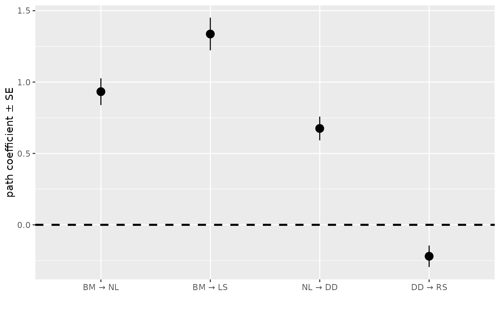
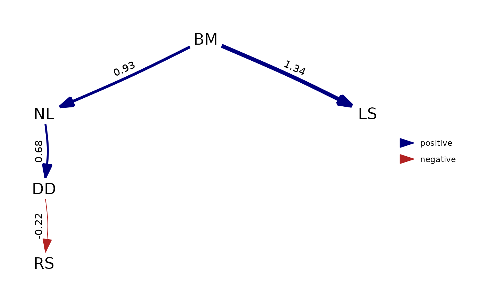

Fits a phylogenetic structural equation model
Arguments
- sem
structural equation model structure, passed to either
specifyModelorspecifyEquationsand then parsed to control the set of path coefficients and variance-covariance parameters- tree
phylogenetic structure, using class
as.phylo- data
data-frame providing numeric values for variables being modeled. Missing values are inputted as NA. If an SEM includes a latent variable (i.e., variable with no available measurements) then it still must be inputted as a column of
datawith entirely NA values. Bernoulli variables must be coded as 0s or 1s, and factors are not allowed.- family
A named list of families, each returning a class
family, including [fixed()], [gaussian()], [binomial()], [Gamma()], and [poisson()], with names that match levels ofcolnames(data)to allow different families by variable. Family [fixed()] specifies that states are known (i.e., measurements for that variable have no error). Other families allow users to supply a link function including `identity`, `log`, `logit`, or `cloglog`. For examplefamily = list(y = binomial("logit"), x = fixed())would specify logit-linked Bernoulli distribution for variable `data$y` and a fixed (no measurement error) distribution for `data$x`. For many variables, it is convenient to do e.g.,family = Map(function(.) gaussian(), colnames(tsdata))rather than writing them all manually.- covs
optional: a character vector of one or more elements, with each element giving a string of variable names, separated by commas. Variances and covariances among all variables in each such string are added to the model. For confirmatory factor analysis models specified via
cfa,covsdefaults to all of the factors in the model, thus specifying all variances and covariances among these factors. Warning:covs="x1, x2"andcovs=c("x1", "x2")are not equivalent:covs="x1, x2"specifies the variance ofx1, the variance ofx2, and their covariance, whilecovs=c("x1", "x2")specifies the variance ofx1and the variance ofx2but not their covariance.- estimate_ou
Boolean indicating whether to estimate an autoregressive (Ornstein-Uhlenbeck) process using additional parameter
lnalpha, corresponding to themodel="OUrandomRoot"parameterization from phylolm as listed in doi:10.1093/sysbio/syu005- estimate_lambda
Boolean indicating whether to estimate additional branch lengths for phylogenetic tips (a.k.a. the Pagel-lambda term) using additional parameter
logitlambda- estimate_kappa
Boolean indicating whether to estimate a nonlinear scaling of branch lengths (a.k.a. the Pagel-kappa term) using additional parameter
lnkappa- data_labels
For each row of
data, listing the corresponding name fromtree$tip.label. Default pullsdata_labelsfromrownames(data)- tmb_inputs
optional tagged list that overrides the default constructor for TMB inputs (use at your own risk)
- estimate_xbar
character-vector listing columns of
datafor which to estimate the mean, which is subtracted off ofdataprior to evaluating relationships among traits. The defaultestimate_xbar = NULLestimates the mean for every column with at least one value that is notNA(i.e., does *not* estimate the mean for latent variables). If you want to have noxbarparameters, useestimate_xbar = vector().- experiments
Optional output from
beverton_holt, or other future options, representing experimental measurements that are used to estimate traits. Defaultexperiments=NULLignores this input.- control
Output from
phylosem_control, used to define user settings, and see documentation for that function for details.
Value
An object (list) of class `phylosem`. Elements include:
- data
Copy of argument
data- SEM_model
SEM model parsed from
semusingspecifyModelorspecifyEquations- obj
TMB object from
MakeADFun- tree
Copy of argument
tree- tmb_inputs
The list of inputs passed to
MakeADFun- opt
The output from
nlminb- sdrep
The output from
sdreport- report
The output from
obj$report()- parhat
The output from
obj$env$parList()containing maximum likelihood estimates and empirical Bayes predictions
Details
Note that parameters logitlambda, lnkappa, and lnalpha if estimated are each estimated as having a single value
that applies to all modeled variables.
This differs from default behavior in phylolm, where these parameters only apply to the "response" and not "predictor" variables.
This also differs from default behavior in phylopath, where a different value is estimated
in each call to phylolm during the d-separation estimate of path coefficients. However, it is
consistent with default behavior in Rphylopars, and estimates should be comparable in that case.
These additional parameters are estimated with unbounded support, which differs somewhat from default
bounded estimates in phylolm, although parameters should match if overriding phylolm defaults
to use unbounded support. Finally, phylosem allows these three parameters to be estimated in any
combination, which is expanded functionality relative to the single-option functionality in phylolm.
Also note that phylopath by default uses standardized coefficients. To achieve matching parameter estimates between phylosem and phylopath, standardize each variable to have a standard deviation of 1.0 prior to fitting with phylosem.
References
**Introducing the package, its features, and comparison with other software (to cite when using phylosem):**
Thorson, J. T., & van der Bijl, W. (In press). phylosem: A fast and simple R package for phylogenetic inference and trait imputation using phylogenetic structural equation models. Journal of Evolutionary Biology. doi:10.1111/jeb.14234
*Statistical methods for phylogenetic structural equation models*
Thorson, J. T., Maureaud, A. A., Frelat, R., Merigot, B., Bigman, J. S., Friedman, S. T., Palomares, M. L. D., Pinsky, M. L., Price, S. A., & Wainwright, P. (2023). Identifying direct and indirect associations among traits by merging phylogenetic comparative methods and structural equation models. Methods in Ecology and Evolution, 14(5), 1259-1275. doi:10.1111/2041-210X.14076
*Earlier development of computational methods, originally used for phlogenetic factor analysis:*
Thorson, J. T. (2020). Predicting recruitment density dependence and intrinsic growth rate for all fishes worldwide using a data-integrated life-history model. Fish and Fisheries, 21(2), 237-251. doi:10.1111/faf.12427
Thorson, J. T., Munch, S. B., Cope, J. M., & Gao, J. (2017). Predicting life history parameters for all fishes worldwide. Ecological Applications, 27(8), 2262-2276. doi:10.1002/eap.1606
*Earlier development of phylogenetic path analysis:*
van der Bijl, W. (2018). phylopath: Easy phylogenetic path analysis in R. PeerJ, 6, e4718. doi:10.7717/peerj.4718
von Hardenberg, A., & Gonzalez-Voyer, A. (2013). Disentangling evolutionary cause-effect relationships with phylogenetic confirmatory path analysis. Evolution; International Journal of Organic Evolution, 67(2), 378-387. doi:10.1111/j.1558-5646.2012.01790.x
*Interface involving SEM `arrow notation` is repurposed from:*
Fox, J., Nie, Z., & Byrnes, J. (2020). Sem: Structural equation models. R package version 3.1-11. https://CRAN.R-project.org/package=sem
*Coercing output to phylo4d depends upon:*
Bolker, B., Butler, M., Cowan, P., de Vienne, D., Eddelbuettel, D., Holder, M., Jombart, T., Kembel, S., Michonneau, F., & Orme, B. (2015). phylobase: Base package for phylogenetic structures and comparative data. R Package Version 0.8.0. https://CRAN.R-project.org/package=phylobase
*Laplace approximation for parameter estimation depends upon:*
Kristensen, K., Nielsen, A., Berg, C. W., Skaug, H., & Bell, B. M. (2016). TMB: Automatic differentiation and Laplace approximation. Journal of Statistical Software, 70(5), 1-21. doi:10.18637/jss.v070.i05
Examples
# Load data set
data(rhino, rhino_tree, package="phylopath")
# Run phylosem
model = "
DD -> RS, p1
BM -> LS, p2
BM -> NL, p3
NL -> DD, p4
"
psem = phylosem( sem = model,
data = rhino[,c("BM","NL","DD","RS","LS")],
tree = rhino_tree )
#> NOTE: it is generally simpler to use specifyEquations() or cfa()
#> see ?specifyEquations
#> List of estimated fixed and random effects:
#> Coefficient_name Number_of_coefficients Type
#> 1 beta_z 9 Fixed
#> 2 x_vj 495 Random
#> Running nlminb_loop #1
#> Running newton_loop #1
#> Running sdreport
# Convert and plot using phylopath
library(phylopath)
#>
#> Attaching package: ‘phylopath’
#> The following objects are masked from ‘package:phylosem’:
#>
#> average, best, choice
my_fitted_DAG = as_fitted_DAG(psem)
coef_plot( my_fitted_DAG )
#> This model has no confidence intervals, so standard errors are shown instead.
#> ℹ Fit the model with `boot` larger than 0 for intervals, or set `error_bar = "se"` to silence this message.
#> Warning: Cannot determine which variables of this model are binary, so the scale of its coefficients is unknown.
#> Paths into a binary variable are log odds ratios, while paths into a continuous variable are standardized regression coefficients.
#> ℹ This model was fitted by a version of phylopath older than 1.4.0, which did not record it. Refit it to label the coefficients, and to stop receiving this warning.

plot( my_fitted_DAG )
#> Warning: Cannot determine which variables of this model are binary, so the scale of its coefficients is unknown.
#> Paths into a binary variable are log odds ratios, while paths into a continuous variable are standardized regression coefficients.
#> ℹ This model was fitted by a version of phylopath older than 1.4.0, which did not record it. Refit it to label the coefficients, and to stop receiving this warning.

if (FALSE) { # \dontrun{
# Convert to phylo4d to extract estimated traits and Standard errors
# for all ancestors and tips in the tree.
# In this rhino example, note that species are labeled s1-s100
# and ancestral nodes are not named.
(traits_est = as_phylo4d(psem))
(traits_SE = as_phylo4d(psem, what="Std. Error"))
} # }